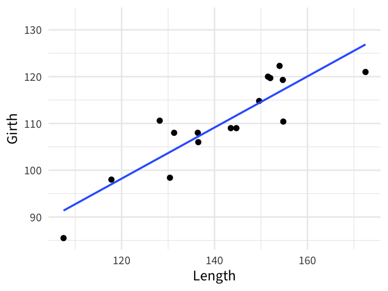
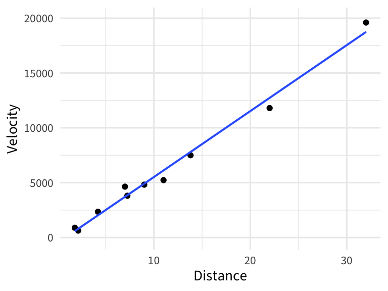

Homework 01 Solutions
Due: Friday of Week 1 at start of class
ImportantImportant!
These solutions are solely for use of grading in Amanda Luby’s Stat230 course in Spring 2026. Dissemination of this solution is not permitted and will be considered grounds for an Academic Dishonesty report for all individuals involved in the giving and receiving of the solution.
Problem 1: Intro Stat review
A 2021 article in Pediatrics (“Baby’s First Years: Design of a Randomized Controlled Trial of Poverty Reduction in the United States”) describes the design of a study to measure the impact of poverty reduction on children’s early development:
A total of 1000 low-income mothers of newborns were enrolled in the study and began receiving a monthly unconditional cash gift for the first several years of their children’s lives. Mothers were randomly assigned to receive either a large monthly cash gift ($333) or a nominal monthly cash gift ($20). All monthly gifts are administered via debit card and can be freely spent with no restrictions. Baby’s First Years aims to answer whether poverty reduction in early childhood (1) improves children’s developmental outcomes and promotes healthier brain functioning, and (2) improves family functioning and better enables parents to support child development.
Why was it important to randomize amount of the cash gift in the study?
Suppose the outcome variable \(Y\) in a statistical analysis is a quantitative measure of child brain functioning. We then calculate the mean of the large gift group (\(\bar{Y}_{large}\)) and the small gift group (\(\bar{Y}_{small}\)). What would an appropriate hypothesis test be? (You only need to set up the hypotheses statements)
If the researchers fail to reject the null hypothesis from (b), what type of error might they have made?
How could the researchers decrease the probability that they make the type of error in (c)?
TipSolution
To account for confounding variables and allow the researchers to draw causal conclusions. Eg, that it was the cash gift, and not something else, that caused improvement in developmental outcomes or family functioning.
I’m going to set this up as a one-sided test, since the researchers think the cash gift will improve outcomes
\[H_0: \mu_L = \mu_S\] \[H_A: \mu_L > \mu_S\]
If they fail to reject, they may have made a Type II error (false negative)
Increase the sample size or use a higher \(\alpha\) threshold (make it easier to reject \(H_0\))
Problem 2: Regression
One factor affecting water availability in Southern California is stream runoff from snowfall. If runoff could be predicted, engineers, planners, and policy makers could do their jobs more effectively because they would have an estimate as to how much water is entering the area.
We have access to a data set compares the stream runoff (in acre-feet) of a river near Bishop, California (due east of San Jose) with snowfall (in inches) at a site in the Sierra Nevada mountains. For each of the following questions, assume that your audience is city water planners with moderate statistical training.
- Below is a scatterplot of stream runoff against snowfall. Comment on the apparent relationship (strength, shape, direction).
- Below is the summary table produced when I fit the regression of the expected runoff given snowfall. Write the fitted regression equation. Be sure to use proper notation.
runoff_mod <- lm(Runoff ~ Precip, data = runoff)
tidy(runoff_mod)# A tibble: 2 × 5
term estimate std.error statistic p.value
<chr> <dbl> <dbl> <dbl> <dbl>
1 (Intercept) 27015. 3219. 8.39 1.93e-10
2 Precip 3752. 216. 17.4 1.56e-20Interpret the slope coefficient in the context of the problem. (Don’t forget to specify units.)
Interpret the intercept in the context of the problem. (Don’t forget to specify units.)
If one winter the site received 10 inches of snowfall, how much runoff is expected? (Don’t forget to specify units.)
TipSolution
There is a moderately strong, positive, linear relationship betwteen snowfall and runoff
\[ \operatorname{\widehat{Runoff}} = 27014.59 + 3752.49(\operatorname{Precip}) \]
When yearly snowfall increases by 1 inch, we expect the average runoff to also increase by 3752.49 2 acre-feet
In a year with 0 inches of snowfall, our model would predict an average of 2.7014587^{4} acre-feet of runoff
For a year with 10 inches of snowfall, we expect 6.4539443^{4} acre-feet of runoff
Problem 3: Grizzlies
Tip
This problem asks you to write R code. You can use the fill-in-the-blank boxes here, or maize or RStudio if you are comfortable. For this homework, we will grade your written answers, so you only need to include sentences for each part. Your answers should reference the specific numbers you found.
The data below are length and girth measurements (in inches) for a sample of Grizzly bears.
grizzly <- read.csv("https://aluby.github.io/stat230/data/grizzly.csv")Plot the bear’s girth (response variable) against its length (predictor variable) and show the linear regression line. Describe the relationship.
Compute and report the correlation coefficient
Fit the linear regression model and report the fitted regression equation
What is the interpretation of the intercept coefficient, in context? Does it make sense to perform this interpretation?
A new bear was observed with a length of 148 inches. What would the model predict for its girth?
TipSolution
- There is a moderate, positive, linear relationship between Girth and Length
gf_point(Girth ~ Length, data = grizzly) |>
gf_lm()
- The correlation is 0.88
cor(grizzly$Girth, grizzly$Length)[1] 0.8897853grizzly_mod <- lm(Girth ~ Length, data = grizzly)
tidy(grizzly_mod)# A tibble: 2 × 5
term estimate std.error statistic p.value
<chr> <dbl> <dbl> <dbl> <dbl>
1 (Intercept) 32.7 10.7 3.06 0.00843
2 Length 0.546 0.0749 7.29 0.00000394\[ \operatorname{\widehat{Girth}} = 32.67 + 0.55(\operatorname{Length}) \]
For a bear with 0 length, we’d expect an average of 32.66 inches girth. This does not make sense, since we cannot have a bear with 0 length
We’d expect a bear with length 148 inches to have an average girth of 113.5 inches
predict(grizzly_mod, newdata = data.frame(Length = 148)) 1
113.5024 Problem 4: The Hubble Constant
Tip
This problem asks you to write R code. You can use the fill-in-the-blank boxes here, or maize or RStudio if you are comfortable. For this homework, we will grade your written answers, so you only need to include sentences for each part. Your answers should reference the specific numbers you found.
Edwin Hubble used the power of the Mount Wilson Observatory telescopes to meaure features of nebulae outside the Milky WAy. He was surprised to find a relationship between a nebula’s distance from earth and the velocity with which it was going away from the earth…. The apparent statistical relationship between distance and velocity led scientists to consider how such a relatinoship could arise. It was proposed that the universe came into being with a Big Bang, a long time ago. If this were true, then \(Y = TX\), where \(Y\) is Distance and \(X\) is velocity, and \(T\) gives the time elapsed since the Big Bang (that is, the age of the universe).
The ex0725 data points below are measured distances and recession velocities for 10 clusters of nebulae, much farther from earth than Hubble’s data.
library(Sleuth3)
ex0725 Distance Velocity
1 1.80 890
2 7.25 3810
3 7.00 4638
4 9.00 4820
5 11.00 5230
6 13.80 7500
7 22.00 11800
8 32.00 19600
9 4.20 2350
10 2.15 630Make a scatterplot with
Velocityas the response andDistanceas the predictor and describe the relationshipAre the data consistent with Hubble’s theory (that the intercept is zero?)
Regardless of your answer to the previous question, fit a simple linear regression model through the origin (i.e., forcing \(\beta_0 = 0\)) by running the following code. Use this model to provide an estimate of the Hubble constant (the age of the universe)
Find a 95% confidence interval for this estimate
TipSolution
- There is a very strong, positive, linear relationship
gf_point(Velocity ~ Distance, data = ex0725) |>
gf_lm()
- If we fit this model, the intercept is -500. This is “close” to zero relative to the observed data, but is not exactly zero.
lm(Velocity ~ Distance, data = ex0725)
Call:
lm(formula = Velocity ~ Distance, data = ex0725)
Coefficients:
(Intercept) Distance
-500.0 601.3 - The estimate of the Hubble constant is 574.2
lm(Velocity ~ 0 + Distance, data = ex0725)
Call:
lm(formula = Velocity ~ 0 + Distance, data = ex0725)
Coefficients:
Distance
574.2 - A 95% confidence interval for this estimate of the Hubble constant is (538.4, 610.0)
lm(Velocity ~ 0 + Distance, data = ex0725) |> confint() 2.5 % 97.5 %
Distance 538.3564 609.9762